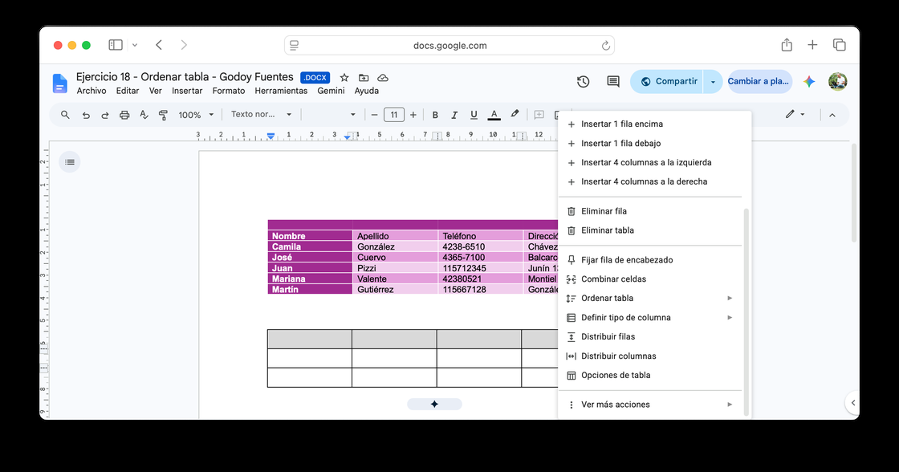
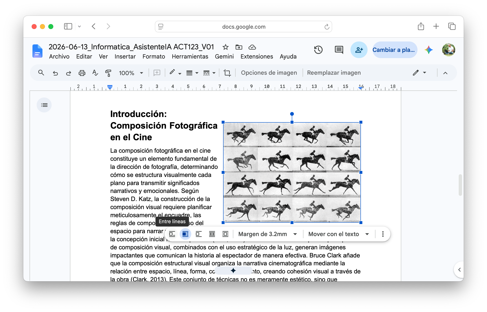
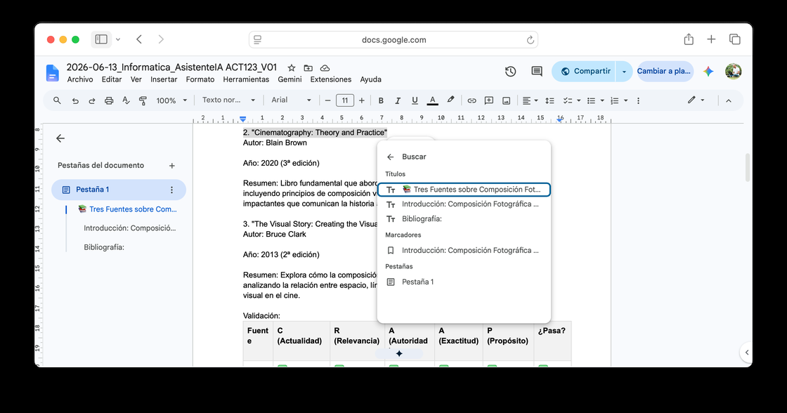

Tablas complejas en Google Docs
Una tabla en Google Docs no es solo filas y columnas. Bien usada, es un contenedor semántico: agrupa información relacionada, establece jerarquías visuales y facilita comparar de un vistazo.
Cuándo usar una tabla (y cuándo no)
| Usá tabla cuando... | No uses tabla cuando... |
|---|---|
| Comparás atributos de varios ítems | El contenido es una lista simple (usá bullets) |
| La información tiene filas y columnas significativas | Solo tenés una columna de datos |
| Necesitás que el lector cruce datos horizontalmente | El texto fluye narrativamente entre ítems |
| Hay encabezados de fila y de columna | Usás la tabla solo para indentar texto |
Combinar celdas y dar formato
Combiná celdas cuando querés un encabezado de grupo que abarca varias columnas: seleccioná las celdas → clic derecho → Combinar celdas.
⚠️ Atención: combinación y legibilidad
Combinar celdas tiene un costo: ordenar y filtrar deja de funcionar en esa tabla. Usala solo para encabezados, nunca para datos que después vas a querer ordenar.
Dar formato a una tabla no es hacerla colorida — es hacerla fácil de leer. Tres criterios: contraste suficiente (texto claro sobre fondo oscuro), alineación consistente (texto a la izquierda, números centrados o a la derecha) y bordes mínimos (uno exterior limpio alcanza).

Clic derecho sobre cualquier celda abre este menú — "Combinar celdas" y "Ordenar tabla" están en la misma lista, por eso conviene usarlos en el orden correcto: primero ordenar, recién después combinar.
Tablas anidadas: casi nunca
Una tabla dentro de otra celda es posible, pero casi siempre innecesaria. Se justifica solo cuando una celda necesita mostrar información tabulada propia y no hay otra forma de representar esa jerarquía.
⚠️ Atención: el síntoma de la sobre-ingeniería
Si tu tabla tiene más de dos niveles de anidado, el problema no es la tabla — es el diseño de la información. Probá dividir en dos tablas separadas con un título que las relacione.
La tabla de fuentes
- Abrí
Documento Base - V01 - Completá la estructura con estilos donde todavía falte: Título (nombre del trabajo) al inicio si no lo tenías, y Encabezado 1 en Introducción, Desarrollo y Conclusión. "Fuentes y Citas" y su subtítulo "Bibliografía" ya tienen el estilo aplicado desde la Clase 03 — no hace falta tocarlos. Aplicá los estilos desde la barra, no a mano.
- En Introducción, escribí 2 o 3 oraciones que presenten tu tema.
- Antes de Bibliografía, insertá una tabla de 3 filas × 4 columnas. Combiná la fila 1 en una sola celda: "Fuentes verificadas — Trabajo de Investigación". En la fila 2 escribí los encabezados de columna (Fuente · Autor/Año · Dato clave · CRAAP: criterio más débil) y completá las dos filas siguientes con las fuentes que ya verificaste en la Clase 03 — no hace falta buscar de nuevo.
- Formato: fila 1 combinada con fondo oscuro y texto blanco centrado; fila 2 con fondo gris claro y negrita; columna 1 alineada a la izquierda, el resto centrado; bordes exteriores visibles.
- Opcional: en Desarrollo, agregá una segunda tabla de 4 filas × 3 columnas que compare dos enfoques, períodos o posturas sobre tu tema, con el mismo esquema de formato.
Imágenes y objetos flotantes
En Google Docs trabajás con dos tipos de objetos flotantes: imágenes y cuadros de texto. Ambos se comportan igual una vez insertados — se anclan a un párrafo o a la página, el texto fluye a sus costados, y los arrastrás libremente.
En línea vs. flotante
| Imagen en línea | Imagen flotante |
|---|---|
| Se comporta como un carácter de texto | Se ancla a un párrafo o a la página, independiente del texto |
| Si agregás texto antes, la imagen se corre | El texto fluye a los costados (ajuste de texto) |
| Ideal para documentos con estructura fija | Ideal cuando la imagen ilustra el párrafo adyacente |
Cómo anclar una imagen flotante

Al hacer clic en la imagen aparece la barra flotante con las opciones de ajuste de texto — arriba, "Opciones de imagen" abre el panel completo.
- Clic en la imagen: aparece una barra flotante de opciones justo arriba.
- Elegí Ajustar texto — la convierte en flotante y el texto fluye a sus costados. A diferencia de Word, Google Docs no tiene un ícono de ancla aparte: la posición se define desde la misma barra o desde el panel Opciones de imagen.
- Clic derecho sobre la imagen → Opciones de imagen → pestaña Ajuste de texto → elegí Mover con el texto, para que la imagen se desplace junto con su párrafo.
- Ajustá los márgenes desde el mismo panel Opciones de imagen → Ajuste de texto → Márgenes.
⚠️ Atención: el error más común
Dejar la imagen en Posición fija en la página en vez de Mover con el texto. Con esa opción la imagen queda fija en un punto físico de la hoja: si agregás contenido arriba, el texto se mueve pero la imagen no, y pierde relación con lo que ilustra.
💡 Consejo: redimensionar sin deformar
Arrastrá siempre desde los manejadores de esquina, no desde los del centro de cada lado — esos estiran la imagen y rompen la proporción.
Por qué "saltan" las imágenes al editar
| Causa | Solución |
|---|---|
| Imagen en línea en un párrafo que creció | Convertirla a flotante y anclarla al párrafo |
| Imagen en "Posición fija en la página" | Cambiar a "Mover con el texto" |
| Imagen muy grande sin margen | Reducir el tamaño o ajustar los márgenes |
Un cuadro de texto (Insertar → Dibujo → Nuevo → ícono de cuadro de texto) se comporta igual que una imagen una vez cerrado el editor: se le aplica el mismo "Ajustar texto" y "Mover con el texto". Sirve para destacar una definición o una cita sin interrumpir el cuerpo del texto.
Una imagen anclada
- Abrí
Documento Base - V01y recuperá la imagen con licencia Creative Commons que ya buscaste y evaluaste ahí. Si encaja en algún párrafo de Desarrollo, usá esa — ya hiciste el trabajo de buscarla y confirmar la licencia. Si no encaja con el tema tal como evolucionó, buscá una nueva en Unsplash (uso libre, sin costo) o en Google Imágenes con el filtro Herramientas → Derechos de uso → Creative Commons. - En el documento, posicioná el cursor en el párrafo de Desarrollo que más se relaciona con esa imagen. Insertar → Imagen → Subir desde la computadora.
- Clic en la imagen → Ajustar texto. Clic derecho → Opciones de imagen → Ajuste de texto → Mover con el texto.
- En el mismo panel Opciones de imagen → Ajuste de texto, ajustá los márgenes para que el texto no quede pegado.
- Verificá: agregá una línea en blanco en el párrafo de arriba. La imagen tiene que seguir al párrafo, no quedarse fija.
Hipervínculos: el documento como espacio navegable
La diferencia entre un documento y un sitio web es menor de lo que parece. Un documento bien construido permite al lector navegar, saltar, volver — con hipervínculos.
Externos e internos
Un hipervínculo externo conecta con una URL fuera del documento: seleccioná el texto → Ctrl+K (Mac: ⌘+K) → pegá la URL → Enter.
💡 Consejo: hipervínculos externos y citas APA
En el cuerpo del texto, el enlace tiene que describir el destino — nunca pegues una URL cruda como texto visible. En la bibliografía APA es al revés: el DOI aparece como URL completa (https://doi.org/10.xxxx/...) y esa URL es el texto visible del enlace.
Un hipervínculo interno navega dentro del mismo documento, en dos pasos: creás el destino (Insertar → Marcador, donde querés que el lector llegue) y creás el enlace (seleccionás el texto → Ctrl+K, Mac: ⌘+K → pestaña Encabezados y marcadores → elegís el destino).
💡 Idea clave
Cada título con estilo Encabezado 1, 2 o 3 ya aparece como destino en la pestaña "Encabezados y marcadores" de Ctrl+K — no hace falta crear un marcador manual para navegar entre secciones. Reservá el marcador manual para un punto específico dentro de una sección, no para la sección entera.

Ctrl+K (Mac: ⌘+K) busca en el propio documento: la sección "Títulos" lista los encabezados con estilo, "Marcadores" los puntos marcados a mano — elegís cualquiera como destino del enlace.
Hipervínculo interno vs. índice automático
| Índice automático | Hipervínculo interno |
|---|---|
| Está al inicio del documento | Puede estar en cualquier parte del texto |
| Lista todas las secciones | Conecta conceptos específicos entre sí |
| Ejemplo: ir a la sección 3 desde el principio | Ejemplo: "ver la tabla con estos datos", con clic directo |
⚠️ Advertencia
El panel de navegación (Ver → Mostrar esquema del documento) se actualiza solo a medida que agregás títulos. El índice automático que va dentro del documento no — hay que hacer clic sobre él y usar el ícono de actualizar. Hacelo siempre antes de entregar.
Un documento navegable
- En Bibliografía, verificá que el DOI de al menos una fuente sea una URL completa como hipervínculo (
https://doi.org/10.xxxx/...). - En Desarrollo, elegí un dato o afirmación puntual que te convenga poder encontrar rápido después — no una sección entera. Posicioná el cursor justo ahí → Insertar → Marcador. Es un punto invisible, no una sección.
- En la Introducción, escribí una frase corta que apunte a ese dato (algo como "el dato completo se desarrolla más abajo"). Seleccioná el fragmento →
Ctrl+K(Mac:⌘+K) → pestaña Encabezados y marcadores → elegí el marcador que acabás de crear. - En Desarrollo, buscá otra frase que mencione un concepto que se retoma en Conclusión. Seleccionala →
Ctrl+K(Mac:⌘+K) → pestaña Encabezados y marcadores → esta vez elegí directamente la sección de destino (sin crear marcador: los títulos con estilo ya son destinos automáticos). - Verificá los tres enlaces con
Ctrl+clic(Mac:⌘+clic): el DOI externo, el marcador manual y el enlace a la sección.
Estructura de página
Hasta acá trabajaste la arquitectura interna del documento. Ahora definís cómo se ve cada página: dónde empiezan, qué llevan arriba y abajo.
Salto de página
Un salto de página fuerza que el contenido siguiente empiece en una hoja nueva, sin importar cuánto espacio quede en la anterior — es la forma correcta de separar secciones mayores. Se inserta con Ctrl+Intro (Mac: ⌘+Intro).
⚠️ Atención
Apretar Enter varias veces para "empujar" contenido a la página siguiente parece funcionar, pero se rompe apenas agregás o quitás texto arriba. El salto de página es permanente e independiente del contenido.
Encabezado, pie de página y numeración
El encabezado y el pie son zonas que se repiten en todas las hojas: el lugar estándar para el título del trabajo, tu nombre y el número de página. Se insertan desde Insertar → Elementos de página → Encabezado / Pie de página / Números de página. Doble clic en la zona correspondiente de cualquier hoja para editarla, y doble clic afuera para cerrar.
Notas al pie
Ya usaste notas al pie en la Clase 03 para tus citas — el mecanismo es el mismo (Insertar → Elementos de página → Nota a pie de página, Ctrl+Alt+F, Mac ⌘+Opción+F). Acá la usás para lo que no es cita: una aclaración o un dato de contexto que amplía el cuerpo sin cortar el argumento.
Estructura final
- Cursor antes del título "Bibliografía" →
Ctrl+Intro. La bibliografía ahora empieza en página nueva. - Insertar → Elementos de página → Encabezado. Escribí el título del trabajo y tu nombre, separados por un guión.
- Insertar → Elementos de página → Números de página, en el pie, centrado.
- En el cuerpo del texto, agregá al menos una nota al pie con una aclaración breve.
- Actualizá el índice (clic sobre él → ícono de actualizar) o insertalo si todavía no lo tenés: Insertar → Elementos de página → Índice.
- Archivo → Historial de versiones → Asignar nombre a la versión actual. Nombrala
Entrega Clase 04.
 Actualizá tu LinkedIn
Actualizá tu LinkedIn
Dos aptitudes concretas quedan demostradas en este mismo documento: Gestión de Documentos Digitales (documentos navegables con tablas, hipervínculos internos e imágenes ancladas correctamente) y Arquitectura de la Información (organizar contenido con tablas, marcadores e hipervínculos en vez de texto lineal).
Una tabla que sí se puede ordenar
No se entrega — es para practicar una mecánica de tabla que la tabla de fuentes de hoy no te pidió: ordenar filas. Al principio de la clase viste que combinar celdas rompe esa función; acá armás una tabla sin celdas combinadas, así que sí se puede.
- Abrí un documento nuevo de Google Docs (no el
Documento Base - V01) e insertá una tabla de 5 filas × 4 columnas. - Completala con nombre, apellido, teléfono y dirección de 4 personas inventadas — una fila por persona, más la fila de encabezados.
- Seleccioná la tabla → clic derecho → Ordenar tabla → ordená alfabéticamente, primero por nombre y después por apellido.
- Pasá el texto de la fila de encabezados a mayúsculas (Formato → Texto → Mayúsculas).
- Aplicale sombreado a la fila de encabezados y bordes prolijos a toda la tabla.
- Guardalo como
Práctica de tablas - Clase 04. No hace falta compartirlo ni subirlo a ningún lado.
Resumen de la clase
Al principio de la clase planteamos el objetivo: pasar de un documento que se lee de arriba a abajo a uno que se navega.
Actividades
Referencia rápida
"frase" — frase exacta-excluir — excluye un términosite: — dentro de un dominiofiletype: — por tipo de archivo2020..2026 — rango de añosClaude · Copilot
Kimi
https://doi.org/10.xxxx/... al final de la cita, si existeCtrl+Alt+F (Mac ⌘+Opción+F) — no reemplaza la cita APAdocs.new — lienzo en blanco al instanteCtrl+Shift+V (Mac ⌘+Shift+V) — pegar sin formato, nunca directo de afueraCtrl+Alt+M (Mac ⌘+Opción+M) — comentarioCtrl+Z (Mac ⌘+Z) — deshacerCtrl+Alt+1 — Encabezado 1Ctrl+Alt+2 — Encabezado 2Ctrl+Alt+0 — Texto normalCtrl+K (Mac ⌘+K) — externo: pegás la URL; interno: pestaña Encabezados y marcadoresCtrl+Intro (Mac ⌘+Intro) — salto de página, nunca Enter repetidoCtrl+Alt+M — insertar; clic en el comentario → Responder / ResolverGlosario
Elemento que no solo agrupa datos visualmente, sino que le da significado a su relación — una tabla bien diseñada permite cruzar filas y columnas para sacar conclusiones.
Celda combinada que abarca varias columnas o filas y actúa como título de ese bloque de datos.
Imagen desvinculada del flujo de texto, anclada a un párrafo o a la página. El texto fluye a sus costados con "Ajustar texto".
Opción de anclaje que vincula la imagen al párrafo adyacente: si el párrafo se desplaza, la imagen lo sigue. Opuesto a "Posición fija en la página".
Punto de anclaje invisible que puede ser destino de un hipervínculo interno. Se crea a mano (Insertar → Marcador) para un punto puntual — distinto de los títulos con estilo, que ya funcionan como marcadores automáticos.
Enlace que apunta a una sección o marcador dentro del mismo documento, sin necesitar conexión a internet.
Tabla insertada dentro de una celda de otra tabla. Casi siempre hay una alternativa más simple.
Fuentes
- Google. Add and edit tables. Google Docs Editors Help.
support.google.com/docs/answer/1696711 - Google. Work with links & bookmarks. Google Docs Editors Help.
support.google.com/docs/answer/45893 - Google. Use headers, footers, page numbers & footnotes. Google Docs Editors Help.
support.google.com/docs/answer/86629